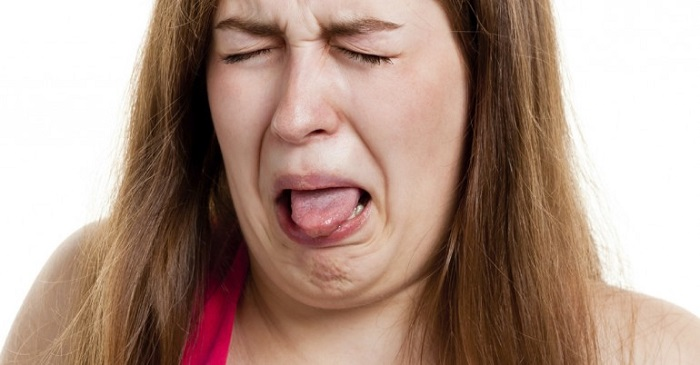

ပါးစပ်ထဲမှာ ခါးခါးနေတာ ဘာလို့လဲ

လူတိုင်းလူတိုင်း ပါးစပ်အရသာမကောင်းတာ တခါတလေ ဖြစ်ဖူးကြမှာပါ။
ပါးစပ်အရသာမကောင်းဘူးဆိုတာ ပါးစပ်ထဲမှာ အခါးမစားထားဘဲနဲ့ ခါးနေတာ (Bitter Taste) သို့မဟုတ် သံအရသာလို သတ္ထုအရသာလိုမျိုးကြီး (Metallic Taste) ဖြစ်နေတာပါ။
အများအားဖြင့်တော့ အဲ့လိုဖြစ်တဲ့အခါမှာ သွားတိုက်လိုက်တာဖြစ်ဖြစ် သို့မဟုတ် ပလုတ်ကျင်းလိုက်ရင် ပျောက်သွားတတ်ပါတယ်။
သို့သော် တချို့တွေမှာ ပါးစပ်အရသာမကောင်းတာ၊ ပါးစပ်ထဲ ခါးသလိုမျိုးကြီးဖြစ်နေတာက တော်တော်နဲ့ မပျောက်တာမျိုး ရှိပါတယ်။
ဒီလိုဖြစ်တာကြာလာတာနဲ့အမျှ ဖြစ်တဲ့သူဟာ စားချင်သောက်ချင်စိတ် လျော့နည်းလာကာ အစားသောက်ပျက်လာပြီး အာဟာရချိုတဲ့ လာနိုင်ပါတယ်။
ဒါကြောင့် ပါးစပ်အရသာမကောင်း ဖြစ်တာ ကြာလာပြီဆိုရင် မပေါ့ဆပဲ ဆရာဝန်နဲ့ပြသပြီး စမ်းသပ်စစ်ဆေးကြည့်ဖို့လိုပါတယ်။
ပါးစပ်အရသာမကောင်းခြင်းကို ဖြစ်စေပြီး အစားသောက်ပျက်ခြင်းကို ဖြစ်စေနိုင်တဲ့အကြောင်းတွေကတော့ သိသလောက်တင်ပြင်ရရင် အောက်ပါအတိုင်းဖြစ်ပါတယ်။
၁။ အသက်ရှုလမ်းကြောင်း ပိုးဝင်ခြင်း (Respiratory Tract Infection)
ဗိုင်းရပ်စ် သို့မဟုတ် ဘက်တီးရီးယားပိုးဝင်ပြီး အာသီးရောင်တာ၊ ထိပ်ကပ်နာဖြစ်တာ၊ အအေးမိပြီး နှာစေးနှာပိတ်ဖြစ်တာတွေဟာ သင့်ရဲ့ အရသာခံနိုင်တဲ့စွမ်းရည်နဲ့ အနံ့ခံနိုင်တဲ့စွမ်းရည်ကို ထိခိုက်စေပါတယ်။
အဲ့အခါ ပါးစပ်အရသာ မကောင်းဖြစ်လာပြီး အစာစားချင်စိတ် နည်းလာနိုင်ပါတယ်။
ဒါ့အပြင် ပိုးသတ်ဆေး (ပဋိဇီဝဆေး) များဟာလည်း ပါးစပ်အရသာခါးစေပြီး အစားသောက်ပျက်စေနိုင်ပါတယ်။
၂။ ဖျားခြင်း
ဖျားပြီး ကိုယ်အပူချိန်အရမ်းတက်တဲ့အခါ ကိုယ်တွင်းရှိရေနဲ့ ဆားဓါတ်ခမ်းခြောက်လာပါတယ်။
အဲ့အခါမှာ ပါးစပ်အရသာ မကောင်းဖြစ်လာပြီး အစာစားချင်စိတ် နည်းလာနိုင်ပါတယ်။
၃။ ပါးစပ်ခြောက်သွေ့ခြင်း (Dry Mouth)
ပါးစပ်ခြောက်သွေ့တယ်ဆိုတာက ကျွန်တော်တို့ရဲ့ တံတွေးဂလင်း (Salivary Glands) တွေက အကြောင်းတခုခုကြောင့် တံတွေးအလုံအလောက် ထုတ်မပေးနိုင်တဲ့အခါ ပါးစပ်ထဲမှာ
ခြောက်သွေ့ပြီး စေးကပ်ကပ်ဖြစ်သလို ခံစားရတာပါ။
တံတွေး (Saliva) ဟာ ပါးစပ်ထဲမှာ ဘက်တီးရီးယားပိုးတွေ ပေါက်ပွားမှုကို နည်းစေပြီး စားသောက်ပြီးတဲ့အခါမှာ ပါးစပ်ထဲမှာ ကျန်ခဲ့တဲ့ အစားအစာအကြွင်းအကျန်တွေကို ဖယ်ရှားပေးပါတယ်။
တံတွေးအထွက်နည်းလာတဲ့အခါ ပါးစပ်ထဲက အစားအကြွင်းအကျန်တွေကို မဖယ်ရှားနိုင်တော့ဘဲ ဘက်တီးရီးယားပိုးတွေလည်း ပိုပေါက်ပွားလာပါတယ်။
ဒီအခါမှာ ပါးစပ်အရသာမကောင်းဘဲ ပါးစပ်ထဲမှာခါးသလိုဖြစ်ကာ အစားသောက်ပျက်လာနိုင်ပါတယ်။
၄။ မှက်ခရုပေါက်ခြင်း
မှက်ခရုပေါက်တဲ့အခါ လျှာ၊ အာခေါင်၊ ပါးစောင်တွေပေါ်မှာ အဖြူဖတ်တွေဖြစ်ပြီး ထိုအဖြူဖတ်တွေက နီရဲရောင်ရမ်းနေနိုင်တဲ့အတွက် ပါးစပ်အရသာမကောင်းဖြစ်ပြီး အစားသောက်ပျက်လာနိုင်ပါတယ်။
၅။ ကိုယ်ဝန်ရှိခြင်း
ကိုယ်ဝန်ရှိတဲ့အခါမှာ ဟော်မုန်းအပြောင်းအလဲတွေ များစွာဖြစ်ပါတယ်။ အဲ့အခါမှာ အရင်ကတခါမှ မစားတဲ့ အစားစာတွေကို ချဉ်ခြင်းတက်တာ၊ တချို့အနံ့တွေကို လုံးဝမခံနိုင်ဘဲ ပျို့အန်ချင်စိတ်ဖြစ်တာတွေ ဖြစ်နိုင်ပါတယ်။
သုတေသနတွေအရ ကိုယ်ဝန်ဆောင်အမျိုးသမီး အတော်များများဟာ ကိုယ်ဝန် ပထမသုံးလမှာ ပါးစပ်ထဲတွင် သံအရသာလိုလို သတ္ထုအရသာလိုလိုကြီး (Metallic taste) ခံစားရကာ ပါးစပ်အရသာ ပျက်တတ်ကြောင်း သိရပါတယ်။
၆။ သွေးဆုံးခြင်း
သွေးဆုံးတဲ့အခါကျရင်လည်း ဟော်မုန်းအပြောင်းအလဲတွေဖြစ်ပါတယ်။ အဲ့အခါမှာပါးစပ်ခြောက်သွေ့ခြင်းကို ဖြစ်စေနိုင်တဲ့အတွက် ပါးစပ်အရသာမကောင်း ဖြစ်တတ်ပါတယ်။ ဒါ့အပြင် သွေးဆုံးတဲ့အခါမှာ လျှာထိပ်နားတဝိုက်နေရာတွေမှာ ပူစပ်ပူလောင်ခံစားမှုမျိုး ခံစားရနိုင်ပါတယ်။
၇။ စားချဉ်ပြန်ခြင်း သို့မဟုတ် အစာချေရည်အထက်သို့ဆန်ခြင်းရောဂါဖြစ်ခြင်း (Gastroesophageal Reflux Disease)
စားချဉ်ပြန်ခြင်း သို့မဟုတ် အစာချေရည်အထက်သို့ဆန်ခြင်း ရောဂါဖြစ်တဲ့အခါမှာလည်း အစာချေရည်တွေက ပါးစပ်ထဲရောက်တဲ့အတွက် ပါးစပ်အရသာပျက်ကာ အစားသောက်ပျက်နိုင်ပါတယ်။
Source-Dr 528